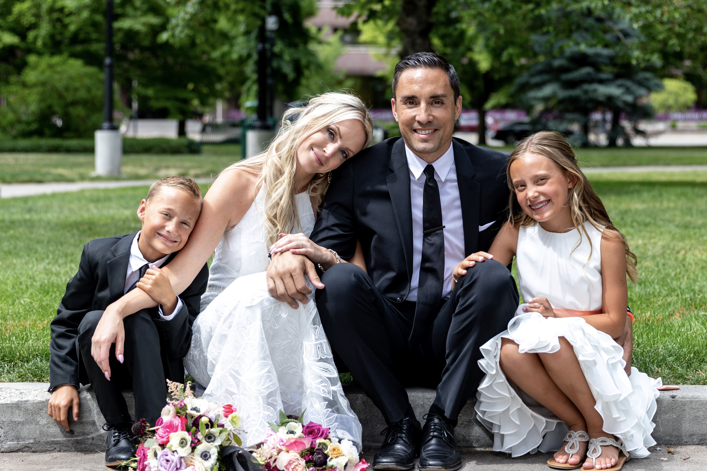

About Me
Richard "RJ" Pupunu was born and raised in Salt lake City, Utah. Not growing up in the majority Mormon community, he attended Catholic school most his life. After graduating from Judge Memorial Catholic High School, he moved to Tempe, AZ where he completed both his undergrad and masters at Arizona State University. He holds an MBA with undergrad degrees in Chemistry and Business Management.
In 2006 he moved back to Utah to start his first company Alpine Auto Transporters, a transportation software company that provided car dealerships and auctions nationwide with real time tracking for all the vehicles they bought and sold outside their home states. After partnering with eBay Motors for a number of years, he went on to sell the company to DealerTrack, a software company that provided full suite software solutions to dealerships and car manufacturers worldwide. Since then, RJ has had his hand in countless projects, founding multiple companies in various industries for which he was recognized by Utah Business Magazine in 2013 as a receipient of their 40 Under 40 Award.
RJ now resides in Daybreak South Jordan, UT with his wife Natalie, their twins Nomi and Kingston, and their french bulldog Steve. He enjoys golf and pretty much any activity that requires being active and spending time with his family.
Connect With Me